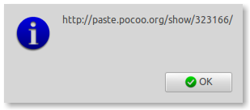

January 19, 2011 - Tagged as: python, tr.
Bir süredir sık sık yaptığım işleri otomatiğe bağlamak için python ve nautilus kullanıyorum(ftp upload, arşiv düzenleme, css sıkıştırma), freenode #python kanalında sık sık kod yapıştırmam gerekiyor ve sürekli dosyanın içeriğini kopyalayıp, paste.pocoo.org’u açıp, formu doldurup, adres satırını kopyalamaktansa, basit bir nautilus scripti yazdım.
Scriptin yaptığı şey, seçtiğiniz dosyayı paste.pocoo.org’a(python dosyası olduğunu varsayarak) yapıştırıp, linki bir uyarı ekranı şeklinde yazdırıyor(alttaki ekran görüntüsü).

Uyarı ekranı için, pratik olsun diye PyZenity kullandım, sudo pip install pyzenity ile kurabilirsiniz.
Kodu şuradan indirebilirsiniz. Çok küçük değişikliklerle tüm diller için ayralanabilir. Hatta dosya formatından hangi dil olduğunu tahmin edebilir hale getirilebilir.